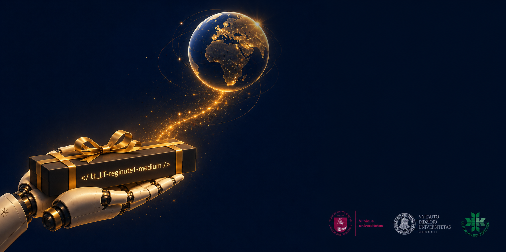

Lietuviškas balsas, kuris kalba jūsų kompiuteryje.
Lietuviškai. Vietoje. Nemokamai.
In English: README_EN.md
Taip ji skamba. Sintezė, ne įrašas.
Tai sintetinis balsas. Visi garso pavyzdžiai sugeneruoti dirbtiniu intelektu; tai ne žmogaus įrašai. Jei skelbsite šiuo balsu įgarsintą turinį viešai, pasitikrinkite, ar jam nereikia dirbtinio intelekto žymos (ES DI akto 50 str., taikomas nuo 2026-08-02).
Balsas gyvena jūsų kompiuteryje ar namų serveryje. Jokios paskyros, jokio API rakto, jokio mėnesinio mokesčio, jokio simbolių limito. Tekstas niekur neišeina.
Lietuvių kalba turi tris priegaides, o standartinis espeak-ng kirtį deda ne tame skiemenyje maždaug pusėje žodžių. Todėl šis balsas espeak kirčiavimo nenaudoja: kirtis imamas iš 189 247 žodžių formų žodyno.
„Kompensacija nuo 2000 eurų“, „15:30“, „25 °C“ — skaičiai, laikas, matai ir santrumpos išplečiami į žodžius prieš sintezę, o ne skaitomi po skaitmenį.
Prisijungia per Wyoming protokolą savo portu, šalia esamo Piper priedo — nieko, kas jau veikia, neliečia. Patikrinta gyvai su Voice PE kolonėle.
Latvių balsas ten yra nuo 2024 m. spalio, estų — nuo 2026 m. rugpjūčio. Lietuvių nebuvo niekada. Šis balsas pateiktas į katalogą ir kol kas laukia eilėje.
Kodas — GPL-3.0, balsas — CC-BY-4.0, paveldėta iš garsyno. Galima naudoti, keisti ir platinti, nurodžius kilmę. Modelis atsisiunčiamas visas, o ne nuomojamas.
Balsas išmokytas iš Vilniaus universiteto LIEPA garsyno sintezės dalies — profesionalios aktorės studijos įrašų (~3 val., CC-BY-4.0). Tai tie patys įrašai, iš kurių 2015 m. buvo padarytas LIEPOS sintezatorius akliesiems; ši Reginutė yra to paties balso skaitmeninė duktė, ne konkurentė.
Viskas, ką išgirsit, vis tiek yra jos: jos tembras, jos tempas, jos būdas užbaigti sakinį. Modelis tik išmoko tai perdėlioti.
Reikia išleisto piper-tts rato — jokio forko, jokių pataisų.
Balsui reikia ir kirčiuojančio fonemizatoriaus iš to paties katalogo: be jo
Piperis modeliui paduotų plikas raides ir lietuviškai nekalbėtų.
pip install piper-tts wyomingToliau — du keliai: grynas Piper (viena Python funkcija) arba Home Assistant per Wyoming serverį. Abu surašyti su visais failais ir parametrais README faile, o serverio receptas su systemd tarnyba — docs/DIEGIMAS_SERVERYJE.md, rašytas gyvo diegimo metu.
Balso asistentui reikia dviejų pusių. Šis projektas yra burna; ausys ne mūsų,
ir tai norim pasakyti garsiai.
Paprika —
Kristijono Jakubsono lietuviškas šnekos atpažinimo modelis, be kurio
lietuviškai su namais nepasikalbėtumėt. Mūsų pačių stende: bendrasis
whisper-large-v3-turbo — 25,95 % WER, Paprika — 7,63 %.
Skaičius savos srities, ne bendras: mūsų testo aibė kilusi iš to paties garsyno.
Ne programuotojas? Nereikia suprasti nė vienos komandos. Įklijuokit į bet kurį dirbtinio intelekto pokalbį (Claude, ChatGPT ar kitą) šią frazę ir toliau klausinėkit savo žodžiais:
Perskaityk https://raw.githubusercontent.com/RobertasTa/reginute/main/AI_CONSULTANT_BRIEF.md
ir padėk man įsidiegti lietuvišką balsą Reginutę.
Tame faile surašyta, ko asistentas turi paklausti prieš patardamas ir ko negali teigti — kad patartų pagal faktus, o ne iš galvos. Tarp kitko, ten parašyta ir tai, kad „pirmas lietuviškas balso sintezatorius“ būtų netiesa: pirmas buvo LIEPOS, 2015 metais.
Vilniaus universitetui ir LIEPOS komandai su prof. Laimučiu Telksniu priešakyje — už garsyną, kuris buvo paskelbtas, o ne pasiliktas. Dešimt metų įrašų, atiduoti už citatos kainą.
Prof. Gražinai Korvel — šio balso mamai. Jos grupės darbas apie VITS sintezę lietuvių kalbai pakeitė šio balso kelią dar prieš pirmą mokymo vakarą.
Arūnui Smaliukui — už kirčių žodyną, ant kurio stovi beveik kiekvienas kirčiuotas šio balso žodis. Kristijonui Jakubsonui — už ausis. Michaelui Hansenui ir Open Home Foundation — už sintezatorių, pakankamai atvirą, kad trijų milijonų žmonių kalba galėtų prisidėti savęs neprašydama leidimo.
Nė vienas jų šio projekto nematė; nė viena įstaiga jo neremia. Pilnos padėkos su visais vardais ir licencijomis — README pabaigoje.